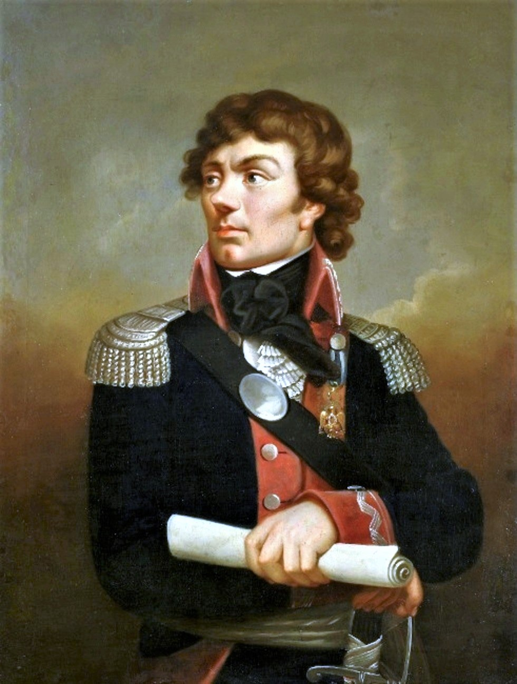
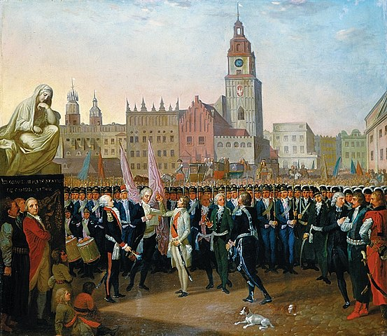

Tadeusz Kościuszko
Tadeusz Kościuszko urodził się 4 lutego 1746 roku w Mereczowszczyźnie
(obecna Białoruś) koło Kosowa na Polesiu. Jego pełne imię to Andrzej
Tadeusz Bonewentura Kościuszko (z czasem korzystał głównie z drugiego
imienia). Jest on bohaterem Polski i USA. Był on czwartym dzieckiem
zuborzałego szlachcica. Od 1755 do 1760 uczęszczał do Kolegium Pijarów w
Lubiszowie. Opuścił szkołę w 1760 z powodu śmierci swojego ojca dwa lata
wcześniej.

Dzięki pomocy rodziny Czartoryskich dołączył do szkoły rycerskiej
Augusta Poniatowskiego w 1765. Brał udział w specjalnym kursie na
inżyniera. Służył jako wicebrygadier w stopniu chorążego. Od 1768 roku
był kapitanem. Z tą rangą ukończył szkołę. W 1769 pojechał do Paryża
gdzie uczył się między innymi o fortyfikacjach. Wrócił do Polski w 1774,
ale nie mógł znaleźć pracy. Nie mógł ożenić się z Ludwiką Sosnowską,
którą kochał z powodu nie posiadania dostatecznego majątku.
Z Polski wyjechał do Drezna, a stamtąd do Paryża. W Paryżu postanowił
wyjechać do Ameryki. W 1774 trafił do Filadelfii, gdzie pracował nad
budowaniem fortyfikacji. W 1780 został głównym inżynierem armii
południowej. W 1783 został generałem brygady i otrzymał honorowe
obywatelstwo USA.
Następnego roku powrócił do Polski i osiedlił się w Siechnowiczach. W
1789 podjął służbę wojskową i otrzymał stopień generała majora. Podczas
wojny polsko-rosyjskiej w 1792 roku walczył między innymi pod Dubienką.
Podał się do dymisji, gdy Stanisław August Poniatowski zaprzestał walki
i dołączył do konfederacji Targowickiej.

Udał się do Galicji gdzie starał się przygotować powstanie. 24 marca
1794 Tadeusz Kościuszko objął przywództwo insurekcji przeciwko rosji i
Carycy Katarzynie. Insurekcja ta została nazwana na jego cześć
insurekcją Kościuszkowską.
Z powodu niewystarczającej liczby broni rozkazał on utworzenie odziałów
kosynierów. Już 4 kwietnia 1794 odbyła się bitwa pod Racławicami w
której kosynierzy przejeli wiele rosyjskich armat.
7 maja Kościuszko podpisał uniwersał Połaniecki, rozszerzający wolność
osobistą chłopów. W przegranej bitwie pod Maciejowicami 10 października
dostał się do niewoli. Zwiastowało to już niefortunny koniec powstania.
Ostatnie oddziały zostały rozwiązane 16 istopada pod Radoszycami. Mimo,
że skutkiem powstania był 3 rozbiór Polski to pozostało ono w sercach
Polaków przykładem walki o niepodległość.
Kościuszko został uwolniony z niewoli po śmierci carycy Katarzyny.
Wyjechał on na krótko do Stanów Zjednoczonych. Spotkał tam dawnych
przyjaciół. Wrócił do Europy i mieszkał w Paryżu od 1798. Spotkał
Napoleona, ale jako Republikanin nie popierał go.
Ostatecznie osiadł w Szwajcarii, gdzie zmarł 15 października 1817.
został pochowany w katedrze na Wawelu w 1819.